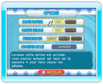

Effectuez votre sélection en appuyant sur haut ou bas sur  pour effectuer votre sélection et modifiez les paramètres en appuyant sur droite ou gauche. Pour changer de Mii, sélectionnez l’option correspondante et appuyez sur
pour effectuer votre sélection et modifiez les paramètres en appuyant sur droite ou gauche. Pour changer de Mii, sélectionnez l’option correspondante et appuyez sur  pour accéder à l’écran de choix du Mii.
pour accéder à l’écran de choix du Mii.